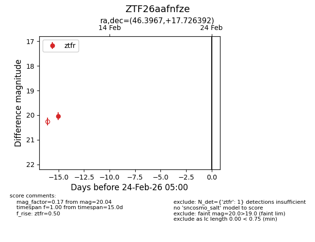
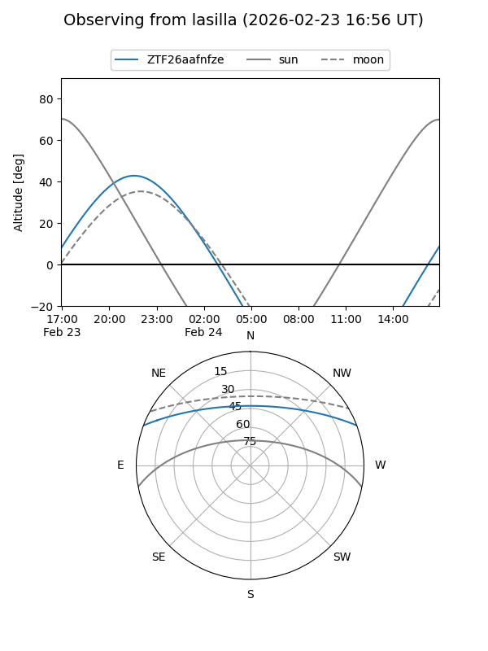
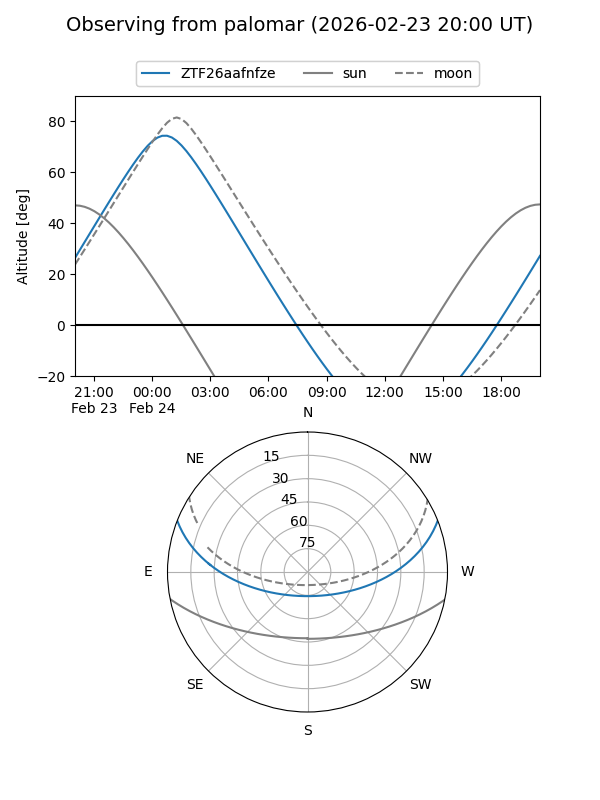

ZTF26aafnfze
Target ZTF26aafnfze at 2026-02-24 09:08
Aliases and brokers:
FINK: link
Lasair: link
ALeRCE: link
alt names
ZTF26aafnfze (ztf,fink_ztf)
Coordinates:
equatorial (ra, dec) = 46.3967,+17.72639
equatorial (HMS+DMS) = 03:05:35.21,+17:43:35.01
galactic (l, b) = (162.6703,-34.59514)
Flags:
Photometry:
last ztfr=20.04
1 ztfr detections
Lightcurve

Visibility


Additional plots